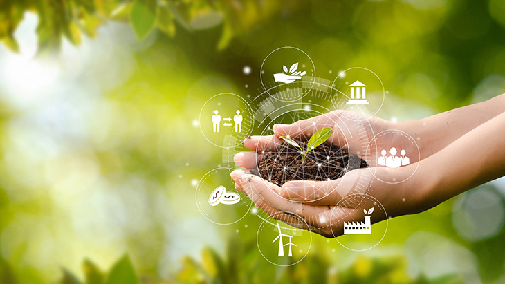

IMPORTANCIA DE LA AGRICULTURA SOSTENIBLE EN LA PROTECCIÓN DEL MEDIO AMBIENTE
La agricultura sostenible es fundamental para la protección del medio ambiente por varias razones:
- . Conservación de la biodiversidad: La agricultura sostenible promueve prácticas que fomentan la diversidad de cultivos, la protección de los habitats naturales y la conservación de las especies silvestres. Esto ayuda a mantener la biodiversidad, que es esencial para el equilibrio de los ecosistemas.
- Reducción de la contaminación: La agricultura convencional puede causar la contaminación del aire, suelo y agua debido al uso de pesticidas, herbicidas y fertilizantes químicos. La agricultura sostenible, en cambio, se enfoca en el uso de métodos más naturales y respetuosos con el medio ambiente, lo que ayuda a reducir la contaminación.
- Conservación del suelo y el agua: La agricultura sostenible incluye prácticas como la rotación de cultivos, el uso de abonos orgánicos y la conservación de la tierra. Estas prócticas ayudan a minimizar la erosón del suelo, mantener su fertilidad y conservar el agua, reduciendo así el impacto negativo sobre los recursos naturales.
- Mitigación del cambio climático: La agricultura sostenible contribuye a la mitigación del cambio climático al reducir las emisiones de gases de efecto invernadero, como el dióxido de carbono y el metano. Además, promueve la captura de carbono en el suelo a través de prácticas como la agroforestería y la agricultura regenerativa.
En resumen, la agricultura sostenible es crucial para proteger el medio ambiente y garantizar la sostenibilidad a largo plazo de la producción de alimentos. Al adoptar prácticas respetuosas con el medio ambiente, los agricultores pueden ayudar a preservar la biodiversidad, reducir la contaminación, conservar los recursos naturales y contribuir a la mitigación del cambio climático.
